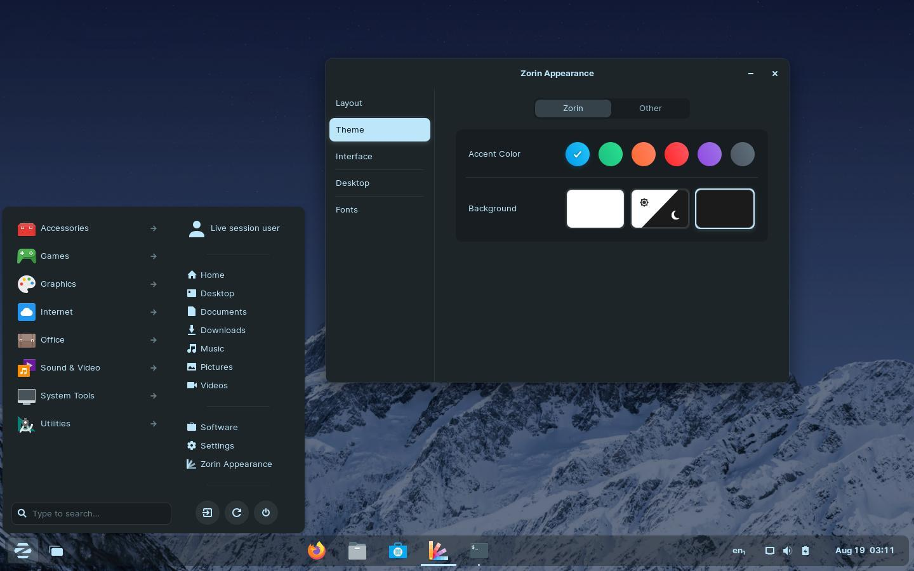

Zorin OS
Zorin OS es completamente gráfico, por lo que cuenta con un instalador gráfico.
En cuanto a estabilidad y seguridad, se utiliza como base las versiones LTS del sistema principal Ubuntu.
Utiliza sus propios repositorios de software, así como los repositorios de Ubuntu.
Se puede acceder a estos repositorios a través de los comandos apt-get o apt install en el terminal de
Linux, o un gestor de software con GUI que ofrece una experiencia similar a la de una tienda de aplicaciones para los
usuarios que no desean utilizar el terminal.
